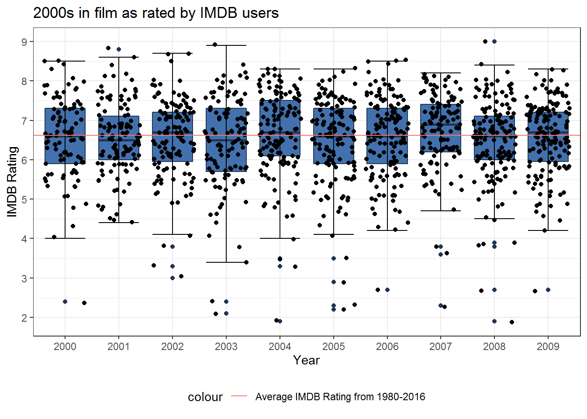
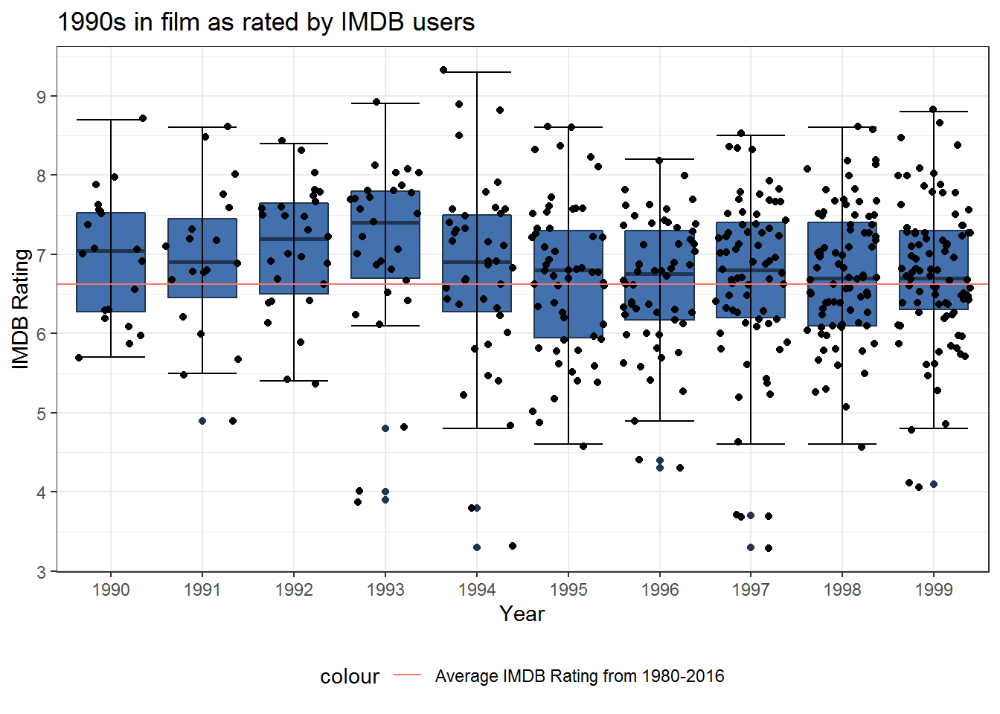
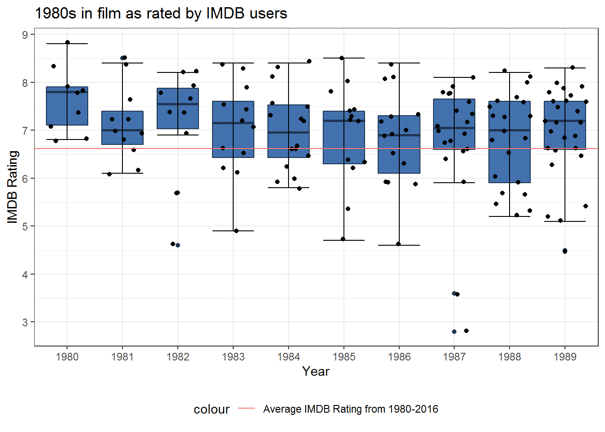
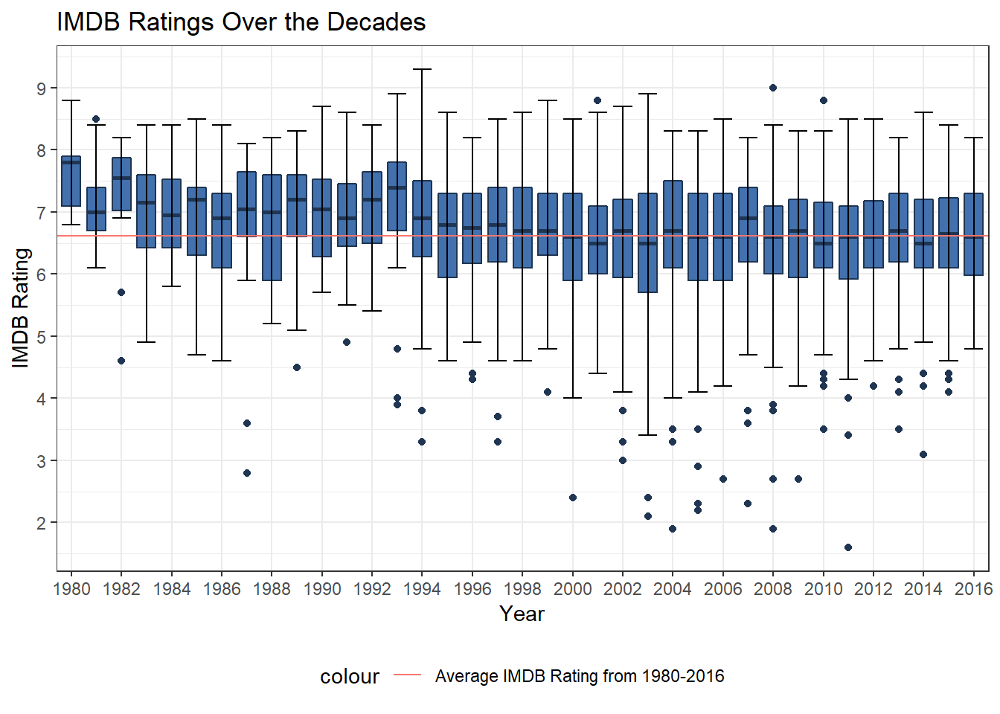

Visualizing IMDB Ratings
This was a very simple visualization I did to test out some of the abilities of ggplot2, an R package with some more robust options that go beyond the base level visualization abilities of R.
We seek to visualize movies over the past few decades to see how quality (or perceived quality at least) has changed over time. There is no actual analysis done on this data, save for the kind of intuitive deduction that can be made from observing the visualizations. Having said that, I would be interested in delving more deeply into these data with the skills in data mining that I’ve gained since having done this.
Data was found on Kaggle.com and drawn from the Internet Movie Database. The code to create the plots can be found in the accompanying GitHub repo for this project, as imdb.Rmd.
Data pre-processing
Here we subset() the data in order to work with a data that makes sense for our purposes. I decided that it would be good to only look at films that were voted on by at least 10,000 people, to ensure that these ratings would be more accurate. For example, a universally praised (or panned) film that only has 1000 votes, probably because it was only seen by a very small minority, probably shouldn’t factor into our appraisal of the the quality of films of the decade in general.
We’re also only going to be looking at the 1980s to the present, so we drop the other rows, as well as any columns that don’t include what we are looking for.
all_movies <- read.csv("movie_metadata.csv",
stringsAsFactors = FALSE,
na.strings = c(NA, "NA", "", 0, "0"),
skipNul = TRUE,
fill = FALSE)
# Only retain films with sufficient number of votes
all_movies <- subset(all_movies, num_voted_users >= 20000,
select = c(imdb_score, title_year, movie_title, director_name, gross), drop = TRUE)
# To remove any rows with missing values
all_movies <- all_movies[complete.cases(all_movies),]
# Remove any duplicate films
all_movies <- all_movies[!duplicated(all_movies$movie_title),]
stats <- matrix(data = NA, nrow = 6, ncol = 7,
dimnames = list(c("1927-2016", "1980-2016","2010-2016", "2000-2010", "1990-2000","1980-1990"),
c("Min", "1Q", "Med", "Mean", "3Q", "Max", "Size")))
# Adding summary statistics and size
stats[1,1:6] <- round(summary(all_movies$imdb_score), 2)
stats[1,7] <- nrow(all_movies)
all_avg <- stats[1,4]The films range from scoring between 1.6 and 9.3 on a scale from 0 to 10.0m and the average score is about 6.62.
# Keeping only relevant columns as well as only looking at movies from 1980s and beyond
movies <- subset(all_movies, title_year >= 1980)
stats[2,1:6] <- round(summary(movies$imdb_score), 2)
stats[2,7] <- nrow(movies)
modern_avg <- stats[2,4]
stats## Min 1Q Med Mean 3Q Max Size
## 1927-2016 1.6 6.1 6.7 6.65 7.3 9.3 2816
## 1980-2016 1.6 6.1 6.7 6.62 7.3 9.3 2747
## 2010-2016 NA NA NA NA NA NA NA
## 2000-2010 NA NA NA NA NA NA NA
## 1990-2000 NA NA NA NA NA NA NA
## 1980-1990 NA NA NA NA NA NA NAIn the process of dropping films before 1980, the average scores were scarcely affected. This is most likely because of the fact that neither IMDB nor the internet existed since the earliest days of film. Knowing this, rather than look at the average score across the entirety of film we’re only going to look at the average between 1980-2016, and compare these films with that metric.
The 10s
The data for the decade that began in 2010 only goes up until 2016, so naturally it is a smaller subset of data than the rest.
Let’s take a look at the best and worst films of the decade.
tens <- subset(movies, title_year >= 2010)
tens <- tens[order(tens$imdb_score, decreasing = TRUE),]
stats[3,1:6]<- round(summary(tens$imdb_score), 2)
stats[3,7] <- nrow(tens)
stats## Min 1Q Med Mean 3Q Max Size
## 1927-2016 1.6 6.1 6.7 6.65 7.3 9.3 2816
## 1980-2016 1.6 6.1 6.7 6.62 7.3 9.3 2747
## 2010-2016 1.6 6.1 6.6 6.58 7.2 8.8 829
## 2000-2010 NA NA NA NA NA NA NA
## 1990-2000 NA NA NA NA NA NA NA
## 1980-1990 NA NA NA NA NA NA NAOverall, the films from 2010-2016 are roughly similar in quality to those across all years and after 1980. The best film isn’t here though, although the worst film might be, judging by the mins and maxes.
## imdb_score title_year movie_title director_name gross
## 98 8.8 2010 Inception Christopher Nolan 292568851
## 97 8.6 2014 Interstellar Christopher Nolan 187991439
## 4 8.5 2012 The Dark Knight Rises Christopher Nolan 448130642
## 297 8.5 2012 Django Unchained Quentin Tarantino 162804648
## 3932 8.5 2011 Samsara Ron Fricke 2601847
## 4029 8.5 2014 Whiplash Damien Chazelle 13092000Note the fact that the three best films of this 6-year period (as voted by IMDB users) were all by Christopher Nolan. Also tied for third is my favorite director, Quentin Tarantino with Django Unchained. Samsara, a relatively unknown film, grossed a modest $2.6 million, a mere fraction of the other films on this list.
## imdb_score title_year movie_title director_name
## 1969 4.0 2011 Shark Night 3DÂ David R. Ellis
## 2204 3.5 2010 Vampires Suck Jason Friedberg
## 2211 3.5 2013 Scary Movie 5Â Malcolm D. Lee
## 515 3.4 2011 Jack and Jill Dennis Dugan
## 2400 3.1 2014 Left Behind Vic Armstrong
## 2835 1.6 2011 Justin Bieber: Never Say Never Jon M. Chu
## gross
## 1969 18860403
## 2204 36658108
## 2211 32014289
## 515 74158157
## 2400 13998282
## 2835 73000942On the other side of things, the worst film of this period was apparently Justin Bieber’s concert film, Never Say Never. Two parody films topped the list. This film, as well as Jack and Jill, starring Adam Sandler, grossed well over $70 million, most likely owing to their leads, but nevertheless were universally panned by audiences.
We can also take a look at the averages across the individual years as well as each decade.

Modern films seem to be pretty mediocre across the board (between 6-7), but if nothing else, each year seems to be consistent with the last. The sole high outlier of this decade was the 2010 film Inception, directed by Christopher Nolan.
The 00s
zeroes <- subset(movies, title_year >= 2000 & title_year < 2010)
zeroes <- zeroes[order(zeroes$imdb_score, decreasing = TRUE),]
stats[4,1:6]<- round(summary(zeroes$imdb_score), 2)
stats[4,7] <- nrow(zeroes)
stats## Min 1Q Med Mean 3Q Max Size
## 1927-2016 1.6 6.1 6.7 6.65 7.3 9.3 2816
## 1980-2016 1.6 6.1 6.7 6.62 7.3 9.3 2747
## 2010-2016 1.6 6.1 6.6 6.58 7.2 8.8 829
## 2000-2010 1.9 5.9 6.6 6.55 7.3 9.0 1280
## 1990-2000 NA NA NA NA NA NA NA
## 1980-1990 NA NA NA NA NA NA NA## imdb_score title_year movie_title
## 67 9.0 2008 The Dark KnightÂ
## 340 8.9 2003 The Lord of the Rings: The Return of the KingÂ
## 271 8.8 2001 The Lord of the Rings: The Fellowship of the RingÂ
## 341 8.7 2002 The Lord of the Rings: The Two TowersÂ
## 4030 8.7 2002 City of GodÂ
## 2374 8.6 2001 Spirited AwayÂ
## director_name gross
## 67 Christopher Nolan 533316061
## 340 Peter Jackson 377019252
## 271 Peter Jackson 313837577
## 341 Peter Jackson 340478898
## 4030 Fernando Meirelles 7563397
## 2374 Hayao Miyazaki 10049886All three of Peter Jackson’s The Lord of the Rings trilogy cracked the top 6, along with another Nolan Batman film. Two foreign films made the top of this list, the Brazilian film City of God (aka Cidade de Deus) and a personal favorite, along with the animated Miyazaki classic, Spirited Away.
## imdb_score title_year movie_title director_name
## 2193 2.3 2007 Epic Movie Jason Friedberg
## 2314 2.3 2005 Alone in the Dark Uwe Boll
## 320 2.2 2005 Son of the Mask Lawrence Guterman
## 2984 2.1 2003 From Justin to Kelly Robert Iscove
## 2269 1.9 2008 Disaster Movie Jason Friedberg
## 2296 1.9 2004 Superbabies: Baby Geniuses 2Â Bob Clark
## gross
## 2193 39737645
## 2314 5132655
## 320 17010646
## 2984 4922166
## 2269 14174654
## 2296 9109322Notably, two of the worst films of this decade were by Jason Friedberg, namely the parody films Epic Movie and Disaster Movie. He is also responsible for Vampires Suck, one of the worst rated films of the 2010s.

The 90s
nineties <- subset(movies, title_year >= 1990 & title_year < 2000)
nineties <- nineties[order(nineties$imdb_score, decreasing = TRUE),]
stats[5,1:6]<- round(summary(nineties$imdb_score), 2)
stats[5,7] <- nrow(nineties)
stats## Min 1Q Med Mean 3Q Max Size
## 1927-2016 1.6 6.1 6.7 6.65 7.3 9.3 2816
## 1980-2016 1.6 6.1 6.7 6.62 7.3 9.3 2747
## 2010-2016 1.6 6.1 6.6 6.58 7.2 8.8 829
## 2000-2010 1.9 5.9 6.6 6.55 7.3 9.0 1280
## 1990-2000 3.3 6.2 6.8 6.77 7.4 9.3 485
## 1980-1990 NA NA NA NA NA NA NA## imdb_score title_year movie_title director_name
## 1938 9.3 1994 The Shawshank Redemption Frank Darabont
## 1875 8.9 1993 Schindler's List Steven Spielberg
## 3356 8.9 1994 Pulp Fiction Quentin Tarantino
## 684 8.8 1999 Fight Club David Fincher
## 837 8.8 1994 Forrest Gump Robert Zemeckis
## 655 8.7 1999 The Matrix Lana Wachowski
## gross
## 1938 28341469
## 1875 96067179
## 3356 107930000
## 684 37023395
## 837 329691196
## 655 171383253Three of my favorite films came out in the 1990s and topped this list: Pulp Fiction, Fight Club, and The Matrix. The decade’s top film, The Shawshank Redemption, actually was a box office disappointment because of its direct competition with Tarantino’s film.
## imdb_score title_year movie_title
## 1448 3.8 1994 Street FighterÂ
## 218 3.7 1997 Batman & RobinÂ
## 268 3.7 1997 Speed 2: Cruise ControlÂ
## 1661 3.7 1997 Mortal Kombat: AnnihilationÂ
## 1935 3.3 1997 Spice WorldÂ
## 3231 3.3 1994 Police Academy: Mission to MoscowÂ
## director_name gross
## 1448 Steven E. de Souza 33423521
## 218 Joel Schumacher 107285004
## 268 Jan de Bont 48068396
## 1661 John R. Leonetti 35927406
## 1935 Bob Spiers 29247405
## 3231 Alan Metter 126247Two films based on fighting video games (my personal favorite genre) landed in the bottom spots: Street Fighter, notably starring Jean Claude van Damme and Kylie Minogue, and Mortal Kombat: Annihilation. Also included was the only Batman film starring George Clooney, replacing Val Kilmer. It would be the last Batman film until Nolan’s reboot in 2005 (the third of his Batman trilogy of course topping the charts in the 2010s). Arnold Schwarzeneggar was Mr. Freeze in this film, possibly the ‘punniest’ villain of all time.

The 80s
eighties <- subset(movies, title_year >= 1980 & title_year < 1990)
eighties <- eighties[order(eighties$imdb_score, decreasing = TRUE),]
stats[6,1:6] <- round(summary(eighties$imdb_score), 2)
stats[6,7] <- nrow(eighties)
stats## Min 1Q Med Mean 3Q Max Size
## 1927-2016 1.6 6.1 6.7 6.65 7.3 9.3 2816
## 1980-2016 1.6 6.1 6.7 6.62 7.3 9.3 2747
## 2010-2016 1.6 6.1 6.6 6.58 7.2 8.8 829
## 2000-2010 1.9 5.9 6.6 6.55 7.3 9.0 1280
## 1990-2000 3.3 6.2 6.8 6.77 7.4 9.3 485
## 1980-1990 2.8 6.5 7.2 6.97 7.7 8.8 153## imdb_score title_year movie_title
## 2052 8.8 1980 Star Wars: Episode V - The Empire Strikes BackÂ
## 2153 8.5 1981 Raiders of the Lost ArkÂ
## 2364 8.5 1985 Back to the FutureÂ
## 1537 8.4 1983 Star Wars: Episode VI - Return of the JediÂ
## 1715 8.4 1984 Once Upon a Time in AmericaÂ
## 2487 8.4 1986 AliensÂ
## director_name gross
## 2052 Irvin Kershner 290158751
## 2153 Steven Spielberg 242374454
## 2364 Robert Zemeckis 210609762
## 1537 Richard Marquand 309125409
## 1715 Sergio Leone 5300000
## 2487 James Cameron 85200000Robert Zemeckis, who made the last list in the 90s for Forrest Gump, also topped this decade with one of my favorites, Back to the Future. The two latter films in the original Star Wars trilogy, Episodes V and VI, also topped the list.
## imdb_score title_year movie_title
## 4230 4.7 1985 Friday the 13th: A New BeginningÂ
## 1694 4.6 1986 Howard the DuckÂ
## 4185 4.6 1982 Halloween III: Season of the WitchÂ
## 3737 4.5 1989 Friday the 13th Part VIII: Jason Takes ManhattanÂ
## 2519 3.6 1987 Superman IV: The Quest for PeaceÂ
## 2067 2.8 1987 Jaws: The RevengeÂ
## director_name gross
## 4230 Danny Steinmann 21300000
## 1694 Willard Huyck 16295774
## 4185 Tommy Lee Wallace 14400000
## 3737 Rob Hedden 14343976
## 2519 Sidney J. Furie 15681020
## 2067 Joseph Sargent 20763013Speaking of sequels however, the worst films of the 80s were several ill-advised sequels to well-known classics, many of which were done without the involvement of original directors or cast members. Of the films here, only Howard the Duck is not a sequel. Notably also is the inclusion of the 5th and 8th Friday the 13th films. Halloween III is the also only film in the series that doesn’t not feature the antagonist Michael Myers.
Jaws: The Revenge was the fourth and final sequel to the series, with only the original film involving Steven Spielberg, who of course directed the 2nd best rated film of this decade, Raiders of the Lost Ark as well as Schindler’s List in the 90s.

Conclusions

## Min 1Q Med Mean 3Q Max Size
## 1927-2016 1.6 6.1 6.7 6.65 7.3 9.3 2816
## 1980-2016 1.6 6.1 6.7 6.62 7.3 9.3 2747
## 2010-2016 1.6 6.1 6.6 6.58 7.2 8.8 829
## 2000-2010 1.9 5.9 6.6 6.55 7.3 9.0 1280
## 1990-2000 3.3 6.2 6.8 6.77 7.4 9.3 485
## 1980-1990 2.8 6.5 7.2 6.97 7.7 8.8 153From the looks of it, the 1980s was overall perhaps the best decade for films, followed by the 1990s. The 80s had the highest quartiles and the highest average score. On the other hand, the 90s had the best film across not only the post 1980-era but of all modern film (The Shawshank Redemption), and the “best worst” film with Police Academy: Mission to Moscow with a 3.3 rating.
For most of the decade, films on average rated around ~7 or ~8, with few if any lower outliers. Conversely, the 2000s have a number of uncharacteristically bad films which drag down the averages per year quite a bit. One wonders how the 2000s would be seen in terms of film history without these.
Several directors came out strong not only in individual decades, but across them. Christopher Nolan had as many as 4 between 2000 and 2016, with 3 in one decade, and 2 from his Dark Knight Trilogy. Robert Zemeckis and Stephen Spielberg each had one film per decade, and Peter Jackson’s Lord of the Rings Trilogy took three of the top spots in the decade it was released.
On the other hand, Jason Friedberg was possibly the most panned director by audiences, given that he released two of the worst films of the 2000s as well as one in the 2010s as voted by IMDB users. Having said that, his “___ Movie” spoof series tend to do well at the box office in spite of being panned by both critics and audiences.
Several of the worst films were sequels to well-known and successful films including horror franchises like Friday the 13th, Halloween, comedy films like The Mask, or the classic that is Jaws. Also important to note is that several parody films, including those by Jason Friedberg and the Scary Movie franchise, appeared in the worst film lists.
Outstanding Questions
It would be interesting to see how IMDB user rating correlates with a film’s gross, or how the number of faces on a poster (one of the metrics in the dataset) correlates with the film’s rating. Genre may also be something worth scrutinizing (e.g. what genres were most popular in what decades).
Some important things to keep in mind when considering the conclusions of this study is that the sample size in the recent decades was much larger than in the earlier ones, so there was a lot more data to substantiate their ratings. i.e. A person is allowed to question whether or not the average ratings for the earlier decades are truly statistically significant, and this is something they might explore in their own analysis.
Data found on Kaggle.com and drawn from the Internet Movie Database